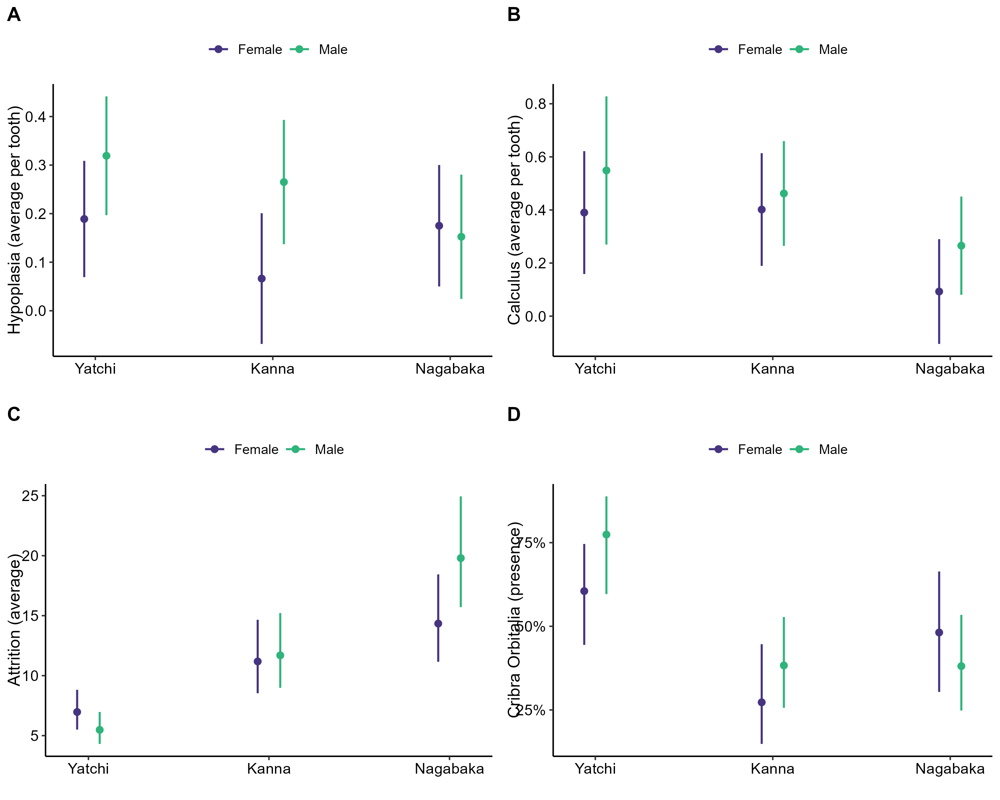

| Model | Term | Estimate | SE | p-value | 95% CI Low | 95% CI High |
|---|---|---|---|---|---|---|
| Hypoplasia | (Intercept) | 0.189 | 0.061 | 0.002 | 0.070 | 0.308 |
| Hypoplasia | siteKanna | -0.123 | 0.091 | 0.180 | -0.301 | 0.056 |
| Hypoplasia | siteNagabaka | -0.014 | 0.087 | 0.874 | -0.185 | 0.158 |
| Hypoplasia | sexM | 0.130 | 0.086 | 0.135 | -0.039 | 0.300 |
| Hypoplasia | siteKanna:sexM | 0.069 | 0.128 | 0.592 | -0.182 | 0.319 |
| Hypoplasia | siteNagabaka:sexM | -0.153 | 0.125 | 0.224 | -0.398 | 0.092 |
| Calculus | (Intercept) | 0.390 | 0.117 | 0.001 | 0.161 | 0.619 |
| Calculus | siteKanna | 0.011 | 0.158 | 0.942 | -0.299 | 0.322 |
| Calculus | siteNagabaka | -0.297 | 0.153 | 0.055 | -0.598 | 0.003 |
| Calculus | sexM | 0.159 | 0.183 | 0.387 | -0.200 | 0.517 |
| Calculus | siteKanna:sexM | -0.098 | 0.234 | 0.676 | -0.557 | 0.361 |
| Calculus | siteNagabaka:sexM | 0.014 | 0.228 | 0.951 | -0.433 | 0.461 |
| Attrition GAMMA | (Intercept) | 1.941 | 0.119 | 0.000 | 1.717 | 2.184 |
| Attrition GAMMA | siteKanna | 0.473 | 0.181 | 0.010 | 0.120 | 0.832 |
| Attrition GAMMA | siteNagabaka | 0.722 | 0.174 | 0.000 | 0.381 | 1.065 |
| Attrition GAMMA | sexM | -0.240 | 0.170 | 0.161 | -0.574 | 0.095 |
| Attrition GAMMA | siteKanna:sexM | 0.285 | 0.256 | 0.268 | -0.218 | 0.786 |
| Attrition GAMMA | siteNagabaka:sexM | 0.562 | 0.242 | 0.022 | 0.086 | 1.037 |
| Cribra Orbitalia | (Intercept) | 0.427 | 0.332 | 0.198 | -0.214 | 1.099 |
| Cribra Orbitalia | siteKanna | -1.408 | 0.513 | 0.006 | -2.452 | -0.429 |
| Cribra Orbitalia | siteNagabaka | -0.502 | 0.508 | 0.324 | -1.512 | 0.492 |
| Cribra Orbitalia | sexM | 0.805 | 0.543 | 0.138 | -0.234 | 1.916 |
| Cribra Orbitalia | siteKanna:sexM | -0.301 | 0.733 | 0.682 | -1.755 | 1.135 |
| Cribra Orbitalia | siteNagabaka:sexM | -1.216 | 0.738 | 0.099 | -2.690 | 0.215 |
Resilience and Health in Colonial Ryukyu Islands
Bioarchaeological analysis of skeletal health markers across early modern Okinawa
bioarchaeology
colonialism
health disparity
Okinawa
Overview
This project examines how Japanese colonial control (1609-1879) affected health and resilience across the Ryukyu Islands (modern-day Okinawa). Using skeletal remains from three archaeological sites, we investigate whether distance from political centers influenced health outcomes and whether men and women experienced colonialism differently.
Key Finding: Remote communities showed different health patterns than the port city, suggesting distance from colonial control may have provided some protection through retained cultural autonomy.
Research Questions
- Did health decline after Satsuma domain assumed control in 1609?
- Were there geographic differences in health across the islands?
- Did men and women experience different health outcomes?
- Can health differences be linked to sociopolitical autonomy and resilience?
What We Found
Dental Attrition (Diet Quality)
- Nagabaka (remote): 2x higher wear than Yatchi port city (p<0.001)
- Kanna (northern): 1.6x higher wear than Yatchi (p=0.010)
- Nagabaka males: Showed additional elevation (p=0.022)
- Interpretation: Remote areas had coarser diets, possibly indicating limited access to trade goods
Cribra Orbitalia (Anemia/Iron Deficiency)
- Yatchi (port city): Highest prevalence
- Kanna: Significantly lower than Yatchi (p=0.006)
- Pattern: Port city paradox - economic activity but poor health
Dental Calculus (Dietary Carbohydrates)
- Nagabaka: Lowest levels (approaching significance, p=0.055)
- Consistent pattern: Women had lower calculus than men across all sites
Enamel Hypoplasia (Childhood Stress)
- No significant differences across sites or sexes
- Interpretation: Everyone faced similar early-life challenges regardless of location
Methods
Dental Sample: 136 individuals from three burial sites (17th-19th centuries)
- Kanna Weenu Atai (n=32): Remote northern cave site
- Paimmi-nu-Nagabaka (n=45): Distant Miyako Island
- Yatchi-no-Gama (n=48): Port city on trade route
Skull Sample: 253 individuals from three burial sites (17th-19th centuries)
- Kanna Weenu Atai (n=88): Remote northern cave site
- Paimmi-nu-Nagabaka (n=96): Distant Miyako Island
- Yatchi-no-Gama (n=69): Port city on trade route
Analysis: Generalized Linear Models (GLM)
- Gaussian family: hypoplasia, calculus
- Gamma family: dental attrition (better fit for skewed data)
- Binomial family: cribra orbitalia (presence/absence)
Predictors: Site, sex, site×sex interaction
Model Results
During the exploratory analysis, we determined that the data were not normally distributed, which indicated the use of GLM. In the models, we used the Gaussian family for hypoplasia and calculus data and the Gamma family for attrition data due to the right-skew in the distribution.
Marginal Effects
Figure 1 displays the marginal effects (predicted values) from the GLM models, showing predicted values with 95% confidence intervals for each health marker by site and sex. The visualization highlights the significant site differences detected in attrition (panel C) and cribra orbitalia (panel D), while also revealing consistent sex-based patterns in calculus (panel B) where women showed lower values across all sites. The patterns reveal that remote sites (Nagabaka, Kanna) showed elevated attrition but lower cribra orbitalia prevalence compared to the port city Yatchi, suggesting distinct health profiles related to distance from colonial centers.

Key Insights
Distance Matters Despite being far from economic centers, remote sites (Nagabaka, Kanna) showed lower anemia rates. This suggests that remote sites:
- Retained food security through traditional subsistence
- Were less exposure to diseases from trade routes
- Had greater cultural autonomy from colonial demands
Gender Matters The significant sex by site interaction at Nagabaka suggests:
- Gender-based economic specialization under taxation
- Men paid grain tax (agricultural work → high dental wear)
- Women paid cloth tax (weaving → craft specialization)
Colonial Control Created Health Disparities Yatchi’s pattern (high anemia, low dental wear) fits a “goods everywhere but none for locals” scenario indicating that economic activity didn’t benefit resident health.
Significance
This research demonstrates that:
- Colonial impacts varied by geography - not uniformly negative
- Distance from power centers could enhance resilience in some contexts
- Traditional food systems may have buffered health impacts
- Gender-based labor systems created sex-specific health outcomes
These findings contribute to understanding:
- How colonialism affects peripheral populations
- The role of cultural autonomy in community resilience
- How skeletal bioarchaeology extends historical analysis
Data & Code
Repository: github.com/kchoover14/RyukyuResilience
Available:
- Raw data (Excel format)
- Cleaned data (CSV format)
- R scripts for data cleaning, exploration, and analysis
- Figures and diagnostic plots
- Model results (coefficients, diagnostics)
Reproducible workflow:
script1-cleaning.R- Import from Excelscript2-exploration.R- Descriptive statistics and QQ plotsscript3-analysis.R- GLM models and marginal effects
Tools & Technologies
- R 4.5.2 for statistical analysis
- Packages: readxl, dplyr, janitor, ggplot2, skimr, ggeffects, cowplot, broom
- Models: GLM with Gaussian, Gamma, and Binomial families
- Visualization: ggplot2 for publication-quality figures
Publication Status
Manuscript: In preparation for submission
Collaborators: - Mark J. Hudson (Max Planck Institute) - Mauricio Hernandez (University of Florida) - Kara C. Hoover (University of Alaska Fairbanks)
Learn More
Read the paper: [Link to be added upon publication]
Explore the data: GitHub Repository
Questions? Contact: kchoover@proton.me
This project demonstrates how bioarchaeological methods can illuminate the health impacts of historical colonialism and the role of geographic and cultural factors in community resilience.